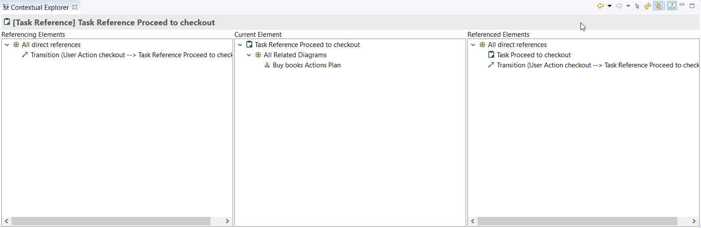
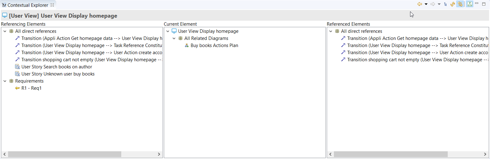
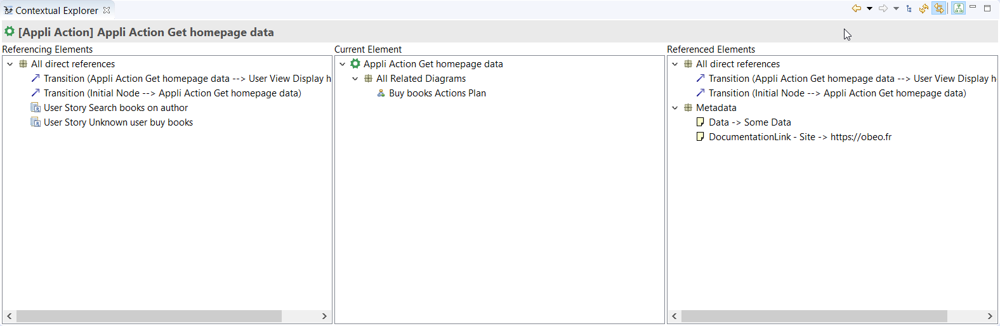
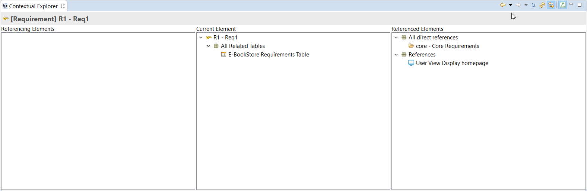
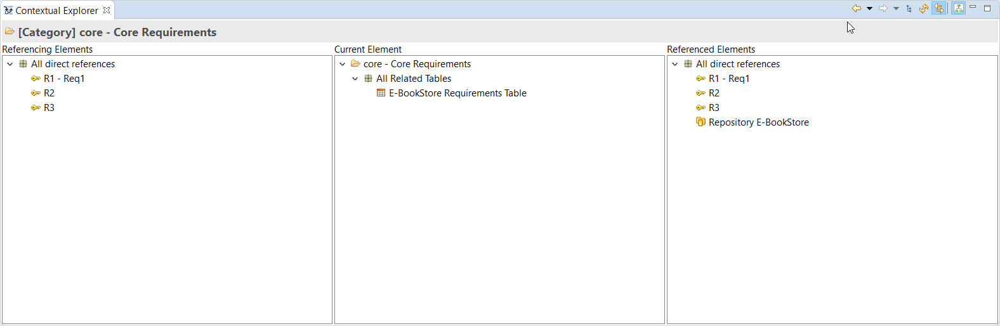
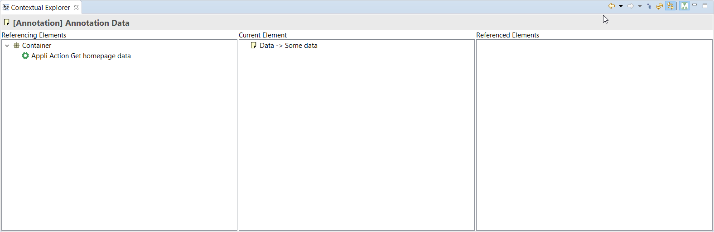
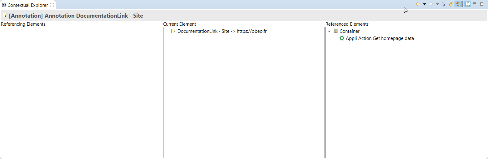

Copyright © Obeo 2019 - All rights reserved. This program and the accompanying materials are made available under the terms of the Eclipse Public License v1.0
Authors Guillaume Coutable
Contact guillaume.coutable@obeo.fr
La vue
Contextual Explorer est une vue utilisés principalement pour donner des informations contextuelles en affichant les relations entre les éléments d’un projet.
Cette vue est disponible depuis la version Safr@n 1.9.
La documentation du Contextual Explorer est disponible à cette adresse : https://wiki.eclipse.org/ModelingAmalgam/ContextualExplorer
L’affichage de la vue Contextual Explorer se fait via le menu :
Window > Show View > Other... > Contextual Explorer (Catégorie Amalgam)

La vue Contextual Explorer est divisé en trois zones verticales. La zone du milieu affiche l'élément sélectionné ainsi que les représentations dans lequel l'élément sélectionné apparaît. la zone de gauche affiche les éléments qui font référence à l'élément affiché dans la zone centrale. La zone de droite affiche les éléments référencés par l'élément affiché dans la zone centrale. Les différents éléments à afficher sont triés dans différentes catégories pour une meilleur lisibilité.
Lorsque l'élément sélectionné est un élément des méta-modèles database ou environement (à l’exception des metadata) :
La zone de gauche peut afficher les catégories :
- «All direct references» sous laquelle s’affiche tous les éléments qui font référence à l'élément sélectionné.
- «Requirements» sous laquelle s’affiche les exigences de l'élément sélectionné.

La zone de droite peut afficher les catégories :
- «All direct references» sous laquelle s’affiche tous les éléments référencés par l'élément sélectionné.
- «Metadata» sous laquelle s’affiche les metadata attachées à l'élément sélectionné.

Lorsque l'élément sélectionné est un Requirement :
La zone de droite peut afficher les catégories :
- «All direct references» sous laquelle s’affiche tous les éléments qui font référence à l'élément sélectionné à l’exception des éléments sur lesquels s’applique l’exigence.
- «References» sous laquelle s’affiche les éléments sur lesquels s’applique l’exigence.

Lorsque l'élément sélectionné est une Catégorie (du meta-modèle requirement) ou un Repository
La zone de gauche peut afficher les catégories :
- «All direct references» sous laquelle s’affiche tous les éléments qui font référence à l'élément sélectionné.
La zone de droite peut afficher les catégories :
- «All direct references» sous laquelle s’affiche tous les éléments référencés par l'élément sélectionné.

Lorsque l'élément sélectionné est un metadata (à l’exception des metadata de documentation) :
la zone de gauche peut afficher la catégorie «Container» sous laquelle s’affiche les éléments qui contiennent des metadata.

Lorsque l'élément sélectionné est un metadata de documentation, la catégorie «Container» s’affiche dans la zone de droite et non pas à gauche.

Il est possible de contribuer de nouvelles catégories ainsi que les éléments contenus en contribuant au Point d’extension «org.eclipse.amalgam.explorer.contextual.core.contentProviderCategory».